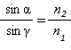

Дерябин Андрей
Факультет:
ПИиКТ
Группа:
P3210
Дисциплина:
Физика
Раздел:
Оптика
Преподаватель:
Афанасьева Т.В., кандидат технических наук
Описание опыта:
На экране изображены три луча: падающий (зеленый), отраженный (фиолетовый) и преломлённый (оранжевый). Угол падения можно изменять от 0 до 180 градусов.
Отраженный луч демонстрирует закон отражения света - угол падения равен углу отражения.
Преломлённый луч демонстрирует два закона. Первый - закон преломления: , где альфа - угол падения, гамма - угол преломления, n2 и n1 - показатели преломления среды.
Второй закон - закон полного отражения света. Полное отражение наблюдается только при переходе луча из более плотной среды в менее плотную и проявляется в том, что начиная с определенного угла падения отраженный луч исчезает. Предельный угол удовлетворяет следующему условию: